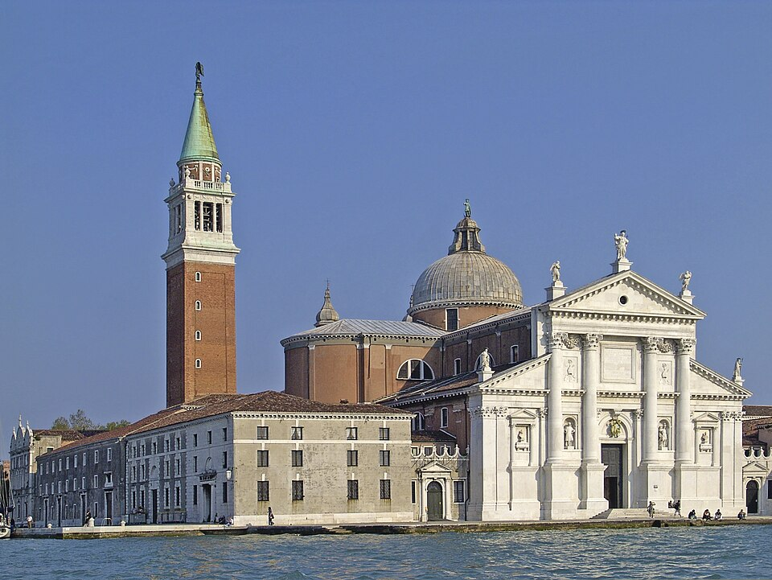

Ricerca per parole chiave:
Spostati nello spazio e nel tempo per conoscere le opere architettoniche di Andrea Palladio.
(Non dimenticare di consultare anche la sezione "Le mete più visitate" con le proposte ricevute dai nostri iscritti alla Newsletter!)
Naviga attraverso la mappa, trova l'opera che più ti ispira e clicca su "Vai all'itinerario" per iniziare il tuo percorso!
Non sai da dove iniziare? Consulta tutti gli itinerari disegnati dal sito UNESCO e fatti ispirare.
Per gli itinerari: Credits (obliged to state): sito ufficiale del patrimonio “Ville Palladiane”, nel rispetto delle relative note legali e condizioni di utilizzo ( https://www.vicenzavillepalladio.it/).
Isola di San Giorgio Maggiore, Venezia
